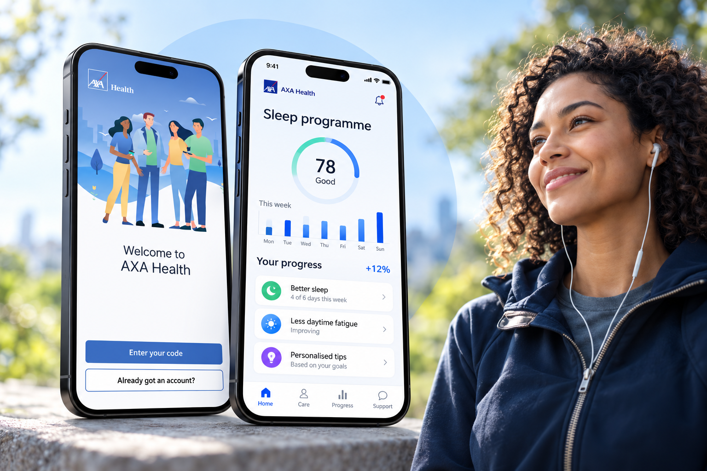

Turning healthcare expertise into scalable digital health services.
I led the end-to-end experience design for AXA Health’s mobile products, turning clinical and customer insight into new, clinically approved digital health services, from concept to production.

- My role
- Design Lead
- Type
- Consulting + Delivery
- Duration
- 10 months (2020–2021)
- Focus
- Digital health · Behaviour change · Mobile product · Service architecture
- Design
- UI to business model · Experience architecture · Design system
- Research
- Member & clinical research · Co-design with clinical experts · User testing
What I did, in four moves
-
01 ChallengeSituation
Grow digital health without fragmenting the experience.
AXA Health wanted to grow its digital health offer and member engagement, but existing services were fragmented, with limited personalisation and an inconsistent experience across conditions and partners.
One service had to work for members, clinicians, business and technology.
-
02 DefineTask
Find the opportunity in the evidence.
I explored member and clinical needs across key health areas, analysed behavioural evidence and mapped the ecosystem of partners.
A clear opportunity for a scalable, clinically approved digital health service.
-
03 MakeAction
Lead the design from concept to production.
- Prototyping
- Co-design with clinical experts
- User testing
- Experience architecture
- A reusable design system
Design led across every level, from UI to business model.
-
04 TransformResult
Personalised, evidence-based support at scale.
The new services launched as part of AXA Health’s mobile products, with a consistent, scalable experience across programmes and partners.
~2M potential members, 5 programmes, 3 ecosystem partners.
One design system behind every member journey
The scalable service and design foundation I built
- 01Onboarding
& eligibility - 02Assessment
& insights - 03Personalised
plan - 04Content &
interventions - 05Progress
& feedback - 06Clinical
escalation - 07Completion
& next steps
What I owned
- Facilitated ecosystem stakeholder collaboration and co-design
- Transformed data and science into concrete products and services
- Led design across levels, from UI to business model
- Led UX, product and service design
- Led from research through design to delivery
- Built a reusable design system for scaled programmes
How I worked
- Rapid co-design
- User research & journey mapping
- Rapid prototyping & validation
- Behaviour-change frameworks
- Clinical workflow modelling
- Value proposition design
- Experience architecture
- Story mapping for agile delivery